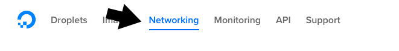
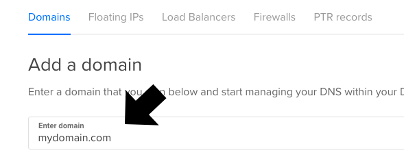
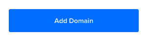
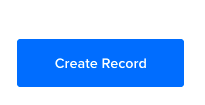

Overview
Secure your SkyTable server by utilizing the free SSL certificate service Let's Encrypt.
Warning
Setting up a secure SkyTable server is not a trivial process, so be sure to read through all of the steps before starting, and then follow them carefully.
To be issued a secure certificate, you must have a fully qualified domain name, and the proper DNS set up to serve the domain.
A fully qualified domain name is basically a registered domain name. Where you decide to purchase a domain is up to you. GoDaddy is a popular choice.
Once you have your domain name, you will need to "point" it to your SkyTable server. Most domain registars provide a means of setting up DNS.
You will want to set up a 3rd level domain for your SkyTable server. This looks something like:
skytable.<mydomain>.com
Amazon
When you first install SkyTable, make sure to add port 443 to your security group settings. You can then use the Route 53 service for your DNS. There are ample guides to assist you.
Once set up, proceed to the Let's Encrypt section below.
DigitalOcean
You will need to point your domain to the DigitalOcean nameservers. The process for this varies by domain registar, but in all cases, you will need the DigitalOcean nameserver addresses, which are:
- ns1.digitalocean.com
- ns2.digitalocean.com
- ns3.digitalocean.com
Instructions for setting nameservers on GoDaddy can be found here.
Important
Spin up a SkyTable droplet as outlined in the DigitalOcean Installation section before continuing.
1. In the DigitalOcean control panel, click the Networking link at the top:

2. Enter your new domain name, without any prefix:

3. Click the Add Domain button:

4. On the next screen, do the following:
- Enter the hostname (only the domain prefix) of your SkyTable server. (1)
- From the WILL DIRECT TO field, select your SkyTable droplet. (2)

5. Click the Create Record button on the right:

At this point your DNS is set up, but generally needs to propagate. This can take anywhere from 5 minutes to a number of hours (though usually within 15 minutes).
You can check the progress using a site like whatsmydns. Enter the full domain, including the prefix, to test.
Let's Encrypt
Danger
Do not continue with this guide until you have an active domain name for your SkyTable server that you can reach through your web browser.
To move your SkyTable server over to HTTPS, perform the following steps:
1. Log into your SkyTable droplet using the root user:
ssh root@<your-skytable-domain>
Note: The root user is ubuntu if hosting on Amazon.
If you have not changed the password yet, the default is coroniumadmin. You may be prompted for your password at various times during this process.
2. Copy and paste the following on the command line to run the SkyTable SSL updater:
Warning
At this point make sure you're ready to move over to HTTPS. The following process will permanently modify your configuration settings.
curl -LO https://s3.amazonaws.com/coronium-skytable/ssl.sh && sudo bash ./ssl.sh
The script will install the needed components, and update the configuration files.
You will then be propted for the hostname, a fully qualified domain name, and a valid email. These items are required to request a certificate from Let's Encrypt.
As stated earlier, you should have created a 3rd level domain, for example: skytable.<domain>.com. Using the example, when entering the requested information, it might look like:
Enter a hostname: skytable
Enter a FQDN: skytable.<domain>.com
Enter an email: you@your-email.com
Be sure to replace the information with your own answers.
Warning
Make sure to triple check your information. If not, then you might not be issued a certificate.
After receiving your secure certificate, the script will exit and your SkyTable server will be accesible using https. Be sure to update the host in the client configuration (in the Corona project):
skytable:init({ user = "<user-email>", password = "<user-password>", base = "app1", host = "https://<skytable-host>:7173", key = "<server-key>" })
Tip
It's generally a good idea to reboot the server instance by entering sudo reboot -h on the command line. Wait a minute, and then check to make sure the server is running again.